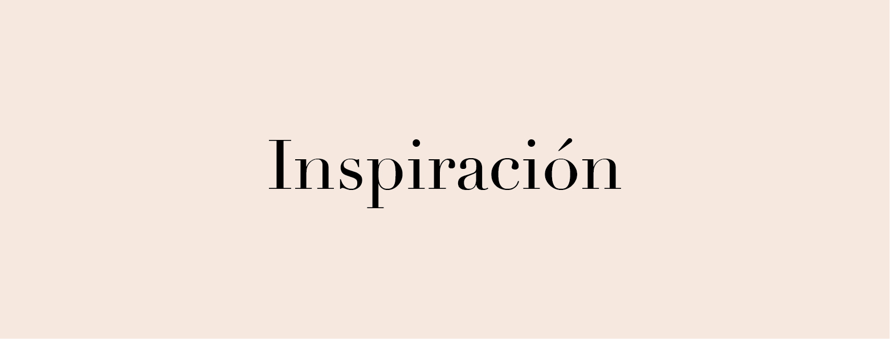
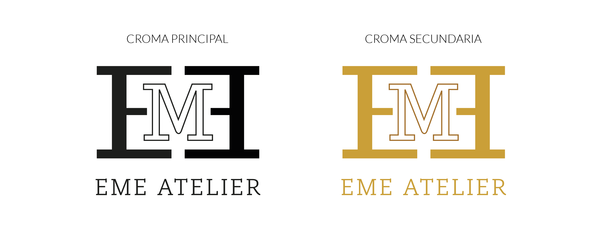
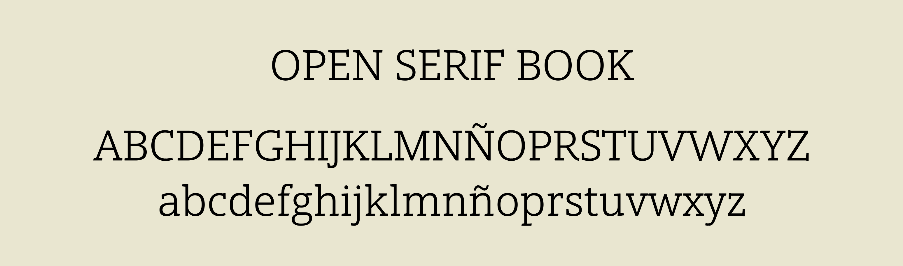
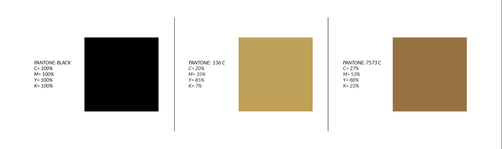

DESARROLLO DE LA MARCA
Desarrollo de Marca
Para desarrollar la marca, se analizó a Edna Moda exhaustivamente llegando a la conclusión de que es una señora elegante, muy correcta, de clase alta y consumidora de ropa cara. La inspiración para diseñar la marca parte de la observación de las grandes marcas de ropa como Prada, Gucci, Louis Vuitton. En estas se visualizó que tienen un signo compuesto por la tipografía del logotipo.
Marca Finalizada
Se expone la marca en su versión original y princpial y también se expone la opción sin logotipo, es decir, unicamente el signo. Además se presenta la variable cromática por lo tanto la croma secundaria. Está permitido también que se aplique el signo sin su logotipo. Se puede utilizar para crear macrosignos, tramas, detalles, entre otros diseños.
Tipografías Utilizadas
La tipografía que se utilizó para la marca se llama OpenSerif Book en versión caja alta. La tipografía la diseño el diseñador Steve Matteson, dueño de la empresa Matteson Typographics.
Paleta Cromática
En cuanto a la paleta cromática, se escogió como primaria el negro gracias a su contraste en varios fondos y su seriedad. Como paleta secundaria se escogió una gama de marrones que mantienen la seriedad de la marca y la elegancia.
